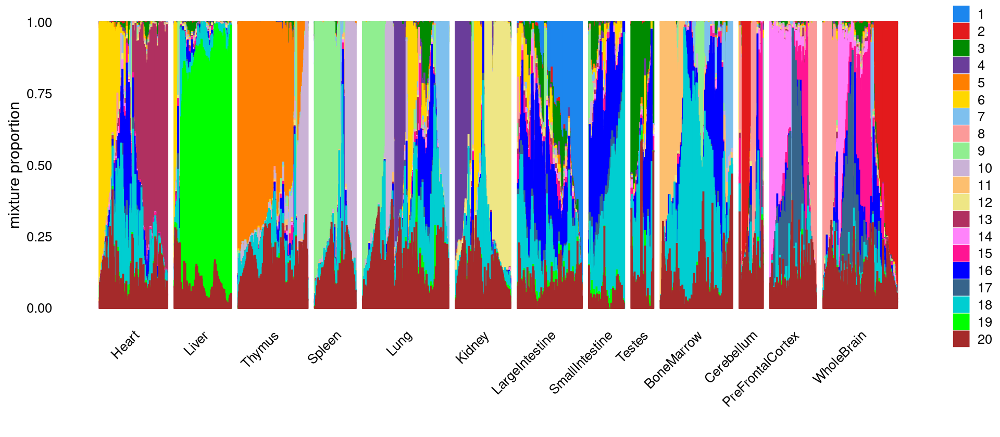

Compare results from different number of k's in Cusanovich2018 data
Kaixuan Luo
Last updated: 2021-02-24
Checks: 7 0
Knit directory: scATACseq-topics/
This reproducible R Markdown analysis was created with workflowr (version 1.6.2). The Checks tab describes the reproducibility checks that were applied when the results were created. The Past versions tab lists the development history.
Great! Since the R Markdown file has been committed to the Git repository, you know the exact version of the code that produced these results.
Great job! The global environment was empty. Objects defined in the global environment can affect the analysis in your R Markdown file in unknown ways. For reproduciblity it's best to always run the code in an empty environment.
The command set.seed(20200729) was run prior to running the code in the R Markdown file. Setting a seed ensures that any results that rely on randomness, e.g. subsampling or permutations, are reproducible.
Great job! Recording the operating system, R version, and package versions is critical for reproducibility.
Nice! There were no cached chunks for this analysis, so you can be confident that you successfully produced the results during this run.
Great job! Using relative paths to the files within your workflowr project makes it easier to run your code on other machines.
Great! You are using Git for version control. Tracking code development and connecting the code version to the results is critical for reproducibility.
The results in this page were generated with repository version d9c3e5a. See the Past versions tab to see a history of the changes made to the R Markdown and HTML files.
Note that you need to be careful to ensure that all relevant files for the analysis have been committed to Git prior to generating the results (you can use wflow_publish or wflow_git_commit). workflowr only checks the R Markdown file, but you know if there are other scripts or data files that it depends on. Below is the status of the Git repository when the results were generated:
Ignored files:
Ignored: .Rhistory
Ignored: .Rproj.user/
Ignored: output/plotly/Buenrostro_2018_Chen2019pipeline/
Untracked files:
Untracked: analysis/process_data_Buenrostro2018_Chen2019.Rmd
Untracked: output/clustering-Cusanovich2018.rds
Untracked: output/plotly/Cusanovich2018/gsea_topic_10_genebody-sum_files/crosstalk-1.1.1/
Untracked: output/plotly/Cusanovich2018/gsea_topic_10_genebody-sum_files/jquery-3.5.1/
Untracked: output/plotly/Cusanovich2018/gsea_topic_10_genebody-sum_files/plotly-binding-4.9.3/
Untracked: output/plotly/Cusanovich2018/gsea_topic_10_genebody-sum_files/plotly-htmlwidgets-css-1.57.1/
Untracked: output/plotly/Cusanovich2018/gsea_topic_10_genebody-sum_files/plotly-main-1.57.1/
Untracked: output/plotly/Cusanovich2018/gsea_topic_10_tss-sum_files/crosstalk-1.1.1/
Untracked: output/plotly/Cusanovich2018/gsea_topic_10_tss-sum_files/jquery-3.5.1/
Untracked: output/plotly/Cusanovich2018/gsea_topic_10_tss-sum_files/plotly-binding-4.9.3/
Untracked: output/plotly/Cusanovich2018/gsea_topic_10_tss-sum_files/plotly-htmlwidgets-css-1.57.1/
Untracked: output/plotly/Cusanovich2018/gsea_topic_10_tss-sum_files/plotly-main-1.57.1/
Untracked: output/plotly/Cusanovich2018/gsea_topic_11_genebody-sum_files/crosstalk-1.1.1/
Untracked: output/plotly/Cusanovich2018/gsea_topic_11_genebody-sum_files/jquery-3.5.1/
Untracked: output/plotly/Cusanovich2018/gsea_topic_11_genebody-sum_files/plotly-binding-4.9.3/
Untracked: output/plotly/Cusanovich2018/gsea_topic_11_genebody-sum_files/plotly-htmlwidgets-css-1.57.1/
Untracked: output/plotly/Cusanovich2018/gsea_topic_11_genebody-sum_files/plotly-main-1.57.1/
Untracked: output/plotly/Cusanovich2018/gsea_topic_11_tss-sum_files/crosstalk-1.1.1/
Untracked: output/plotly/Cusanovich2018/gsea_topic_11_tss-sum_files/jquery-3.5.1/
Untracked: output/plotly/Cusanovich2018/gsea_topic_11_tss-sum_files/plotly-binding-4.9.3/
Untracked: output/plotly/Cusanovich2018/gsea_topic_11_tss-sum_files/plotly-htmlwidgets-css-1.57.1/
Untracked: output/plotly/Cusanovich2018/gsea_topic_11_tss-sum_files/plotly-main-1.57.1/
Untracked: output/plotly/Cusanovich2018/gsea_topic_12_genebody-sum_files/crosstalk-1.1.1/
Untracked: output/plotly/Cusanovich2018/gsea_topic_12_genebody-sum_files/jquery-3.5.1/
Untracked: output/plotly/Cusanovich2018/gsea_topic_12_genebody-sum_files/plotly-binding-4.9.3/
Untracked: output/plotly/Cusanovich2018/gsea_topic_12_genebody-sum_files/plotly-htmlwidgets-css-1.57.1/
Untracked: output/plotly/Cusanovich2018/gsea_topic_12_genebody-sum_files/plotly-main-1.57.1/
Untracked: output/plotly/Cusanovich2018/gsea_topic_12_tss-sum_files/crosstalk-1.1.1/
Untracked: output/plotly/Cusanovich2018/gsea_topic_12_tss-sum_files/jquery-3.5.1/
Untracked: output/plotly/Cusanovich2018/gsea_topic_12_tss-sum_files/plotly-binding-4.9.3/
Untracked: output/plotly/Cusanovich2018/gsea_topic_12_tss-sum_files/plotly-htmlwidgets-css-1.57.1/
Untracked: output/plotly/Cusanovich2018/gsea_topic_12_tss-sum_files/plotly-main-1.57.1/
Untracked: output/plotly/Cusanovich2018/gsea_topic_13_genebody-sum_files/crosstalk-1.1.1/
Untracked: output/plotly/Cusanovich2018/gsea_topic_13_genebody-sum_files/jquery-3.5.1/
Untracked: output/plotly/Cusanovich2018/gsea_topic_13_genebody-sum_files/plotly-binding-4.9.3/
Untracked: output/plotly/Cusanovich2018/gsea_topic_13_genebody-sum_files/plotly-htmlwidgets-css-1.57.1/
Untracked: output/plotly/Cusanovich2018/gsea_topic_13_genebody-sum_files/plotly-main-1.57.1/
Untracked: output/plotly/Cusanovich2018/gsea_topic_13_tss-sum_files/crosstalk-1.1.1/
Untracked: output/plotly/Cusanovich2018/gsea_topic_13_tss-sum_files/jquery-3.5.1/
Untracked: output/plotly/Cusanovich2018/gsea_topic_13_tss-sum_files/plotly-binding-4.9.3/
Untracked: output/plotly/Cusanovich2018/gsea_topic_13_tss-sum_files/plotly-htmlwidgets-css-1.57.1/
Untracked: output/plotly/Cusanovich2018/gsea_topic_13_tss-sum_files/plotly-main-1.57.1/
Untracked: output/plotly/Cusanovich2018/gsea_topic_1_genebody-sum_files/crosstalk-1.1.1/
Untracked: output/plotly/Cusanovich2018/gsea_topic_1_genebody-sum_files/jquery-3.5.1/
Untracked: output/plotly/Cusanovich2018/gsea_topic_1_genebody-sum_files/plotly-binding-4.9.3/
Untracked: output/plotly/Cusanovich2018/gsea_topic_1_genebody-sum_files/plotly-htmlwidgets-css-1.57.1/
Untracked: output/plotly/Cusanovich2018/gsea_topic_1_genebody-sum_files/plotly-main-1.57.1/
Untracked: output/plotly/Cusanovich2018/gsea_topic_1_tss-sum_files/crosstalk-1.1.1/
Untracked: output/plotly/Cusanovich2018/gsea_topic_1_tss-sum_files/jquery-3.5.1/
Untracked: output/plotly/Cusanovich2018/gsea_topic_1_tss-sum_files/plotly-binding-4.9.3/
Untracked: output/plotly/Cusanovich2018/gsea_topic_1_tss-sum_files/plotly-htmlwidgets-css-1.57.1/
Untracked: output/plotly/Cusanovich2018/gsea_topic_1_tss-sum_files/plotly-main-1.57.1/
Untracked: output/plotly/Cusanovich2018/gsea_topic_2_genebody-sum_files/crosstalk-1.1.1/
Untracked: output/plotly/Cusanovich2018/gsea_topic_2_genebody-sum_files/jquery-3.5.1/
Untracked: output/plotly/Cusanovich2018/gsea_topic_2_genebody-sum_files/plotly-binding-4.9.3/
Untracked: output/plotly/Cusanovich2018/gsea_topic_2_genebody-sum_files/plotly-htmlwidgets-css-1.57.1/
Untracked: output/plotly/Cusanovich2018/gsea_topic_2_genebody-sum_files/plotly-main-1.57.1/
Untracked: output/plotly/Cusanovich2018/gsea_topic_2_tss-sum_files/crosstalk-1.1.1/
Untracked: output/plotly/Cusanovich2018/gsea_topic_2_tss-sum_files/jquery-3.5.1/
Untracked: output/plotly/Cusanovich2018/gsea_topic_2_tss-sum_files/plotly-binding-4.9.3/
Untracked: output/plotly/Cusanovich2018/gsea_topic_2_tss-sum_files/plotly-htmlwidgets-css-1.57.1/
Untracked: output/plotly/Cusanovich2018/gsea_topic_2_tss-sum_files/plotly-main-1.57.1/
Untracked: output/plotly/Cusanovich2018/gsea_topic_3_genebody-sum_files/crosstalk-1.1.1/
Untracked: output/plotly/Cusanovich2018/gsea_topic_3_genebody-sum_files/jquery-3.5.1/
Untracked: output/plotly/Cusanovich2018/gsea_topic_3_genebody-sum_files/plotly-binding-4.9.3/
Untracked: output/plotly/Cusanovich2018/gsea_topic_3_genebody-sum_files/plotly-htmlwidgets-css-1.57.1/
Untracked: output/plotly/Cusanovich2018/gsea_topic_3_genebody-sum_files/plotly-main-1.57.1/
Untracked: output/plotly/Cusanovich2018/gsea_topic_3_tss-sum_files/crosstalk-1.1.1/
Untracked: output/plotly/Cusanovich2018/gsea_topic_3_tss-sum_files/jquery-3.5.1/
Untracked: output/plotly/Cusanovich2018/gsea_topic_3_tss-sum_files/plotly-binding-4.9.3/
Untracked: output/plotly/Cusanovich2018/gsea_topic_3_tss-sum_files/plotly-htmlwidgets-css-1.57.1/
Untracked: output/plotly/Cusanovich2018/gsea_topic_3_tss-sum_files/plotly-main-1.57.1/
Untracked: output/plotly/Cusanovich2018/gsea_topic_4_genebody-sum_files/crosstalk-1.1.1/
Untracked: output/plotly/Cusanovich2018/gsea_topic_4_genebody-sum_files/jquery-3.5.1/
Untracked: output/plotly/Cusanovich2018/gsea_topic_4_genebody-sum_files/plotly-binding-4.9.3/
Untracked: output/plotly/Cusanovich2018/gsea_topic_4_genebody-sum_files/plotly-htmlwidgets-css-1.57.1/
Untracked: output/plotly/Cusanovich2018/gsea_topic_4_genebody-sum_files/plotly-main-1.57.1/
Untracked: output/plotly/Cusanovich2018/gsea_topic_4_tss-sum_files/crosstalk-1.1.1/
Untracked: output/plotly/Cusanovich2018/gsea_topic_4_tss-sum_files/jquery-3.5.1/
Untracked: output/plotly/Cusanovich2018/gsea_topic_4_tss-sum_files/plotly-binding-4.9.3/
Untracked: output/plotly/Cusanovich2018/gsea_topic_4_tss-sum_files/plotly-htmlwidgets-css-1.57.1/
Untracked: output/plotly/Cusanovich2018/gsea_topic_4_tss-sum_files/plotly-main-1.57.1/
Untracked: output/plotly/Cusanovich2018/gsea_topic_5_genebody-sum_files/crosstalk-1.1.1/
Untracked: output/plotly/Cusanovich2018/gsea_topic_5_genebody-sum_files/jquery-3.5.1/
Untracked: output/plotly/Cusanovich2018/gsea_topic_5_genebody-sum_files/plotly-binding-4.9.3/
Untracked: output/plotly/Cusanovich2018/gsea_topic_5_genebody-sum_files/plotly-htmlwidgets-css-1.57.1/
Untracked: output/plotly/Cusanovich2018/gsea_topic_5_genebody-sum_files/plotly-main-1.57.1/
Untracked: output/plotly/Cusanovich2018/gsea_topic_5_tss-sum_files/crosstalk-1.1.1/
Untracked: output/plotly/Cusanovich2018/gsea_topic_5_tss-sum_files/jquery-3.5.1/
Untracked: output/plotly/Cusanovich2018/gsea_topic_5_tss-sum_files/plotly-binding-4.9.3/
Untracked: output/plotly/Cusanovich2018/gsea_topic_5_tss-sum_files/plotly-htmlwidgets-css-1.57.1/
Untracked: output/plotly/Cusanovich2018/gsea_topic_5_tss-sum_files/plotly-main-1.57.1/
Untracked: output/plotly/Cusanovich2018/gsea_topic_6_genebody-sum_files/crosstalk-1.1.1/
Untracked: output/plotly/Cusanovich2018/gsea_topic_6_genebody-sum_files/jquery-3.5.1/
Untracked: output/plotly/Cusanovich2018/gsea_topic_6_genebody-sum_files/plotly-binding-4.9.3/
Untracked: output/plotly/Cusanovich2018/gsea_topic_6_genebody-sum_files/plotly-htmlwidgets-css-1.57.1/
Untracked: output/plotly/Cusanovich2018/gsea_topic_6_genebody-sum_files/plotly-main-1.57.1/
Untracked: output/plotly/Cusanovich2018/gsea_topic_6_tss-sum_files/crosstalk-1.1.1/
Untracked: output/plotly/Cusanovich2018/gsea_topic_6_tss-sum_files/jquery-3.5.1/
Untracked: output/plotly/Cusanovich2018/gsea_topic_6_tss-sum_files/plotly-binding-4.9.3/
Untracked: output/plotly/Cusanovich2018/gsea_topic_6_tss-sum_files/plotly-htmlwidgets-css-1.57.1/
Untracked: output/plotly/Cusanovich2018/gsea_topic_6_tss-sum_files/plotly-main-1.57.1/
Untracked: output/plotly/Cusanovich2018/gsea_topic_7_genebody-sum_files/crosstalk-1.1.1/
Untracked: output/plotly/Cusanovich2018/gsea_topic_7_genebody-sum_files/jquery-3.5.1/
Untracked: output/plotly/Cusanovich2018/gsea_topic_7_genebody-sum_files/plotly-binding-4.9.3/
Untracked: output/plotly/Cusanovich2018/gsea_topic_7_genebody-sum_files/plotly-htmlwidgets-css-1.57.1/
Untracked: output/plotly/Cusanovich2018/gsea_topic_7_genebody-sum_files/plotly-main-1.57.1/
Untracked: output/plotly/Cusanovich2018/gsea_topic_7_tss-sum_files/crosstalk-1.1.1/
Untracked: output/plotly/Cusanovich2018/gsea_topic_7_tss-sum_files/jquery-3.5.1/
Untracked: output/plotly/Cusanovich2018/gsea_topic_7_tss-sum_files/plotly-binding-4.9.3/
Untracked: output/plotly/Cusanovich2018/gsea_topic_7_tss-sum_files/plotly-htmlwidgets-css-1.57.1/
Untracked: output/plotly/Cusanovich2018/gsea_topic_7_tss-sum_files/plotly-main-1.57.1/
Untracked: output/plotly/Cusanovich2018/gsea_topic_8_genebody-sum_files/crosstalk-1.1.1/
Untracked: output/plotly/Cusanovich2018/gsea_topic_8_genebody-sum_files/jquery-3.5.1/
Untracked: output/plotly/Cusanovich2018/gsea_topic_8_genebody-sum_files/plotly-binding-4.9.3/
Untracked: output/plotly/Cusanovich2018/gsea_topic_8_genebody-sum_files/plotly-htmlwidgets-css-1.57.1/
Untracked: output/plotly/Cusanovich2018/gsea_topic_8_genebody-sum_files/plotly-main-1.57.1/
Untracked: output/plotly/Cusanovich2018/gsea_topic_8_tss-sum_files/crosstalk-1.1.1/
Untracked: output/plotly/Cusanovich2018/gsea_topic_8_tss-sum_files/jquery-3.5.1/
Untracked: output/plotly/Cusanovich2018/gsea_topic_8_tss-sum_files/plotly-binding-4.9.3/
Untracked: output/plotly/Cusanovich2018/gsea_topic_8_tss-sum_files/plotly-htmlwidgets-css-1.57.1/
Untracked: output/plotly/Cusanovich2018/gsea_topic_8_tss-sum_files/plotly-main-1.57.1/
Untracked: output/plotly/Cusanovich2018/gsea_topic_9_genebody-sum_files/crosstalk-1.1.1/
Untracked: output/plotly/Cusanovich2018/gsea_topic_9_genebody-sum_files/jquery-3.5.1/
Untracked: output/plotly/Cusanovich2018/gsea_topic_9_genebody-sum_files/plotly-binding-4.9.3/
Untracked: output/plotly/Cusanovich2018/gsea_topic_9_genebody-sum_files/plotly-htmlwidgets-css-1.57.1/
Untracked: output/plotly/Cusanovich2018/gsea_topic_9_genebody-sum_files/plotly-main-1.57.1/
Untracked: output/plotly/Cusanovich2018/gsea_topic_9_tss-sum_files/crosstalk-1.1.1/
Untracked: output/plotly/Cusanovich2018/gsea_topic_9_tss-sum_files/jquery-3.5.1/
Untracked: output/plotly/Cusanovich2018/gsea_topic_9_tss-sum_files/plotly-binding-4.9.3/
Untracked: output/plotly/Cusanovich2018/gsea_topic_9_tss-sum_files/plotly-htmlwidgets-css-1.57.1/
Untracked: output/plotly/Cusanovich2018/gsea_topic_9_tss-sum_files/plotly-main-1.57.1/
Untracked: output/plotly/Cusanovich2018/volcano_topic_10_genebody-sum_files/crosstalk-1.1.1/
Untracked: output/plotly/Cusanovich2018/volcano_topic_10_genebody-sum_files/jquery-3.5.1/
Untracked: output/plotly/Cusanovich2018/volcano_topic_10_genebody-sum_files/plotly-binding-4.9.3/
Untracked: output/plotly/Cusanovich2018/volcano_topic_10_genebody-sum_files/plotly-htmlwidgets-css-1.57.1/
Untracked: output/plotly/Cusanovich2018/volcano_topic_10_genebody-sum_files/plotly-main-1.57.1/
Untracked: output/plotly/Cusanovich2018/volcano_topic_10_tss-sum_files/crosstalk-1.1.1/
Untracked: output/plotly/Cusanovich2018/volcano_topic_10_tss-sum_files/jquery-3.5.1/
Untracked: output/plotly/Cusanovich2018/volcano_topic_10_tss-sum_files/plotly-binding-4.9.3/
Untracked: output/plotly/Cusanovich2018/volcano_topic_10_tss-sum_files/plotly-htmlwidgets-css-1.57.1/
Untracked: output/plotly/Cusanovich2018/volcano_topic_10_tss-sum_files/plotly-main-1.57.1/
Untracked: output/plotly/Cusanovich2018/volcano_topic_11_genebody-sum_files/crosstalk-1.1.1/
Untracked: output/plotly/Cusanovich2018/volcano_topic_11_genebody-sum_files/jquery-3.5.1/
Untracked: output/plotly/Cusanovich2018/volcano_topic_11_genebody-sum_files/plotly-binding-4.9.3/
Untracked: output/plotly/Cusanovich2018/volcano_topic_11_genebody-sum_files/plotly-htmlwidgets-css-1.57.1/
Untracked: output/plotly/Cusanovich2018/volcano_topic_11_genebody-sum_files/plotly-main-1.57.1/
Untracked: output/plotly/Cusanovich2018/volcano_topic_11_tss-sum_files/crosstalk-1.1.1/
Untracked: output/plotly/Cusanovich2018/volcano_topic_11_tss-sum_files/jquery-3.5.1/
Untracked: output/plotly/Cusanovich2018/volcano_topic_11_tss-sum_files/plotly-binding-4.9.3/
Untracked: output/plotly/Cusanovich2018/volcano_topic_11_tss-sum_files/plotly-htmlwidgets-css-1.57.1/
Untracked: output/plotly/Cusanovich2018/volcano_topic_11_tss-sum_files/plotly-main-1.57.1/
Untracked: output/plotly/Cusanovich2018/volcano_topic_12_genebody-sum_files/crosstalk-1.1.1/
Untracked: output/plotly/Cusanovich2018/volcano_topic_12_genebody-sum_files/jquery-3.5.1/
Untracked: output/plotly/Cusanovich2018/volcano_topic_12_genebody-sum_files/plotly-binding-4.9.3/
Untracked: output/plotly/Cusanovich2018/volcano_topic_12_genebody-sum_files/plotly-htmlwidgets-css-1.57.1/
Untracked: output/plotly/Cusanovich2018/volcano_topic_12_genebody-sum_files/plotly-main-1.57.1/
Untracked: output/plotly/Cusanovich2018/volcano_topic_12_tss-sum_files/crosstalk-1.1.1/
Untracked: output/plotly/Cusanovich2018/volcano_topic_12_tss-sum_files/jquery-3.5.1/
Untracked: output/plotly/Cusanovich2018/volcano_topic_12_tss-sum_files/plotly-binding-4.9.3/
Untracked: output/plotly/Cusanovich2018/volcano_topic_12_tss-sum_files/plotly-htmlwidgets-css-1.57.1/
Untracked: output/plotly/Cusanovich2018/volcano_topic_12_tss-sum_files/plotly-main-1.57.1/
Untracked: output/plotly/Cusanovich2018/volcano_topic_13_genebody-sum_files/crosstalk-1.1.1/
Untracked: output/plotly/Cusanovich2018/volcano_topic_13_genebody-sum_files/jquery-3.5.1/
Untracked: output/plotly/Cusanovich2018/volcano_topic_13_genebody-sum_files/plotly-binding-4.9.3/
Untracked: output/plotly/Cusanovich2018/volcano_topic_13_genebody-sum_files/plotly-htmlwidgets-css-1.57.1/
Untracked: output/plotly/Cusanovich2018/volcano_topic_13_genebody-sum_files/plotly-main-1.57.1/
Untracked: output/plotly/Cusanovich2018/volcano_topic_13_tss-sum_files/crosstalk-1.1.1/
Untracked: output/plotly/Cusanovich2018/volcano_topic_13_tss-sum_files/jquery-3.5.1/
Untracked: output/plotly/Cusanovich2018/volcano_topic_13_tss-sum_files/plotly-binding-4.9.3/
Untracked: output/plotly/Cusanovich2018/volcano_topic_13_tss-sum_files/plotly-htmlwidgets-css-1.57.1/
Untracked: output/plotly/Cusanovich2018/volcano_topic_13_tss-sum_files/plotly-main-1.57.1/
Untracked: output/plotly/Cusanovich2018/volcano_topic_1_genebody-sum_files/crosstalk-1.1.1/
Untracked: output/plotly/Cusanovich2018/volcano_topic_1_genebody-sum_files/jquery-3.5.1/
Untracked: output/plotly/Cusanovich2018/volcano_topic_1_genebody-sum_files/plotly-binding-4.9.3/
Untracked: output/plotly/Cusanovich2018/volcano_topic_1_genebody-sum_files/plotly-htmlwidgets-css-1.57.1/
Untracked: output/plotly/Cusanovich2018/volcano_topic_1_genebody-sum_files/plotly-main-1.57.1/
Untracked: output/plotly/Cusanovich2018/volcano_topic_1_tss-sum_files/crosstalk-1.1.1/
Untracked: output/plotly/Cusanovich2018/volcano_topic_1_tss-sum_files/jquery-3.5.1/
Untracked: output/plotly/Cusanovich2018/volcano_topic_1_tss-sum_files/plotly-binding-4.9.3/
Untracked: output/plotly/Cusanovich2018/volcano_topic_1_tss-sum_files/plotly-htmlwidgets-css-1.57.1/
Untracked: output/plotly/Cusanovich2018/volcano_topic_1_tss-sum_files/plotly-main-1.57.1/
Untracked: output/plotly/Cusanovich2018/volcano_topic_2_genebody-sum_files/crosstalk-1.1.1/
Untracked: output/plotly/Cusanovich2018/volcano_topic_2_genebody-sum_files/jquery-3.5.1/
Untracked: output/plotly/Cusanovich2018/volcano_topic_2_genebody-sum_files/plotly-binding-4.9.3/
Untracked: output/plotly/Cusanovich2018/volcano_topic_2_genebody-sum_files/plotly-htmlwidgets-css-1.57.1/
Untracked: output/plotly/Cusanovich2018/volcano_topic_2_genebody-sum_files/plotly-main-1.57.1/
Untracked: output/plotly/Cusanovich2018/volcano_topic_2_tss-sum_files/crosstalk-1.1.1/
Untracked: output/plotly/Cusanovich2018/volcano_topic_2_tss-sum_files/jquery-3.5.1/
Untracked: output/plotly/Cusanovich2018/volcano_topic_2_tss-sum_files/plotly-binding-4.9.3/
Untracked: output/plotly/Cusanovich2018/volcano_topic_2_tss-sum_files/plotly-htmlwidgets-css-1.57.1/
Untracked: output/plotly/Cusanovich2018/volcano_topic_2_tss-sum_files/plotly-main-1.57.1/
Untracked: output/plotly/Cusanovich2018/volcano_topic_3_genebody-sum_files/crosstalk-1.1.1/
Untracked: output/plotly/Cusanovich2018/volcano_topic_3_genebody-sum_files/jquery-3.5.1/
Untracked: output/plotly/Cusanovich2018/volcano_topic_3_genebody-sum_files/plotly-binding-4.9.3/
Untracked: output/plotly/Cusanovich2018/volcano_topic_3_genebody-sum_files/plotly-htmlwidgets-css-1.57.1/
Untracked: output/plotly/Cusanovich2018/volcano_topic_3_genebody-sum_files/plotly-main-1.57.1/
Untracked: output/plotly/Cusanovich2018/volcano_topic_3_tss-sum_files/crosstalk-1.1.1/
Untracked: output/plotly/Cusanovich2018/volcano_topic_3_tss-sum_files/jquery-3.5.1/
Untracked: output/plotly/Cusanovich2018/volcano_topic_3_tss-sum_files/plotly-binding-4.9.3/
Untracked: output/plotly/Cusanovich2018/volcano_topic_3_tss-sum_files/plotly-htmlwidgets-css-1.57.1/
Untracked: output/plotly/Cusanovich2018/volcano_topic_3_tss-sum_files/plotly-main-1.57.1/
Untracked: output/plotly/Cusanovich2018/volcano_topic_4_genebody-sum_files/crosstalk-1.1.1/
Untracked: output/plotly/Cusanovich2018/volcano_topic_4_genebody-sum_files/jquery-3.5.1/
Untracked: output/plotly/Cusanovich2018/volcano_topic_4_genebody-sum_files/plotly-binding-4.9.3/
Untracked: output/plotly/Cusanovich2018/volcano_topic_4_genebody-sum_files/plotly-htmlwidgets-css-1.57.1/
Untracked: output/plotly/Cusanovich2018/volcano_topic_4_genebody-sum_files/plotly-main-1.57.1/
Untracked: output/plotly/Cusanovich2018/volcano_topic_4_tss-sum_files/crosstalk-1.1.1/
Untracked: output/plotly/Cusanovich2018/volcano_topic_4_tss-sum_files/jquery-3.5.1/
Untracked: output/plotly/Cusanovich2018/volcano_topic_4_tss-sum_files/plotly-binding-4.9.3/
Untracked: output/plotly/Cusanovich2018/volcano_topic_4_tss-sum_files/plotly-htmlwidgets-css-1.57.1/
Untracked: output/plotly/Cusanovich2018/volcano_topic_4_tss-sum_files/plotly-main-1.57.1/
Untracked: output/plotly/Cusanovich2018/volcano_topic_5_genebody-sum_files/crosstalk-1.1.1/
Untracked: output/plotly/Cusanovich2018/volcano_topic_5_genebody-sum_files/jquery-3.5.1/
Untracked: output/plotly/Cusanovich2018/volcano_topic_5_genebody-sum_files/plotly-binding-4.9.3/
Untracked: output/plotly/Cusanovich2018/volcano_topic_5_genebody-sum_files/plotly-htmlwidgets-css-1.57.1/
Untracked: output/plotly/Cusanovich2018/volcano_topic_5_genebody-sum_files/plotly-main-1.57.1/
Untracked: output/plotly/Cusanovich2018/volcano_topic_5_tss-sum_files/crosstalk-1.1.1/
Untracked: output/plotly/Cusanovich2018/volcano_topic_5_tss-sum_files/jquery-3.5.1/
Untracked: output/plotly/Cusanovich2018/volcano_topic_5_tss-sum_files/plotly-binding-4.9.3/
Untracked: output/plotly/Cusanovich2018/volcano_topic_5_tss-sum_files/plotly-htmlwidgets-css-1.57.1/
Untracked: output/plotly/Cusanovich2018/volcano_topic_5_tss-sum_files/plotly-main-1.57.1/
Untracked: output/plotly/Cusanovich2018/volcano_topic_6_genebody-sum_files/crosstalk-1.1.1/
Untracked: output/plotly/Cusanovich2018/volcano_topic_6_genebody-sum_files/jquery-3.5.1/
Untracked: output/plotly/Cusanovich2018/volcano_topic_6_genebody-sum_files/plotly-binding-4.9.3/
Untracked: output/plotly/Cusanovich2018/volcano_topic_6_genebody-sum_files/plotly-htmlwidgets-css-1.57.1/
Untracked: output/plotly/Cusanovich2018/volcano_topic_6_genebody-sum_files/plotly-main-1.57.1/
Untracked: output/plotly/Cusanovich2018/volcano_topic_6_tss-sum_files/crosstalk-1.1.1/
Untracked: output/plotly/Cusanovich2018/volcano_topic_6_tss-sum_files/jquery-3.5.1/
Untracked: output/plotly/Cusanovich2018/volcano_topic_6_tss-sum_files/plotly-binding-4.9.3/
Untracked: output/plotly/Cusanovich2018/volcano_topic_6_tss-sum_files/plotly-htmlwidgets-css-1.57.1/
Untracked: output/plotly/Cusanovich2018/volcano_topic_6_tss-sum_files/plotly-main-1.57.1/
Untracked: output/plotly/Cusanovich2018/volcano_topic_7_genebody-sum_files/crosstalk-1.1.1/
Untracked: output/plotly/Cusanovich2018/volcano_topic_7_genebody-sum_files/jquery-3.5.1/
Untracked: output/plotly/Cusanovich2018/volcano_topic_7_genebody-sum_files/plotly-binding-4.9.3/
Untracked: output/plotly/Cusanovich2018/volcano_topic_7_genebody-sum_files/plotly-htmlwidgets-css-1.57.1/
Untracked: output/plotly/Cusanovich2018/volcano_topic_7_genebody-sum_files/plotly-main-1.57.1/
Untracked: output/plotly/Cusanovich2018/volcano_topic_7_tss-sum_files/crosstalk-1.1.1/
Untracked: output/plotly/Cusanovich2018/volcano_topic_7_tss-sum_files/jquery-3.5.1/
Untracked: output/plotly/Cusanovich2018/volcano_topic_7_tss-sum_files/plotly-binding-4.9.3/
Untracked: output/plotly/Cusanovich2018/volcano_topic_7_tss-sum_files/plotly-htmlwidgets-css-1.57.1/
Untracked: output/plotly/Cusanovich2018/volcano_topic_7_tss-sum_files/plotly-main-1.57.1/
Untracked: output/plotly/Cusanovich2018/volcano_topic_8_genebody-sum_files/crosstalk-1.1.1/
Untracked: output/plotly/Cusanovich2018/volcano_topic_8_genebody-sum_files/jquery-3.5.1/
Untracked: output/plotly/Cusanovich2018/volcano_topic_8_genebody-sum_files/plotly-binding-4.9.3/
Untracked: output/plotly/Cusanovich2018/volcano_topic_8_genebody-sum_files/plotly-htmlwidgets-css-1.57.1/
Untracked: output/plotly/Cusanovich2018/volcano_topic_8_genebody-sum_files/plotly-main-1.57.1/
Untracked: output/plotly/Cusanovich2018/volcano_topic_8_tss-sum_files/crosstalk-1.1.1/
Untracked: output/plotly/Cusanovich2018/volcano_topic_8_tss-sum_files/jquery-3.5.1/
Untracked: output/plotly/Cusanovich2018/volcano_topic_8_tss-sum_files/plotly-binding-4.9.3/
Untracked: output/plotly/Cusanovich2018/volcano_topic_8_tss-sum_files/plotly-htmlwidgets-css-1.57.1/
Untracked: output/plotly/Cusanovich2018/volcano_topic_8_tss-sum_files/plotly-main-1.57.1/
Untracked: output/plotly/Cusanovich2018/volcano_topic_9_genebody-sum_files/crosstalk-1.1.1/
Untracked: output/plotly/Cusanovich2018/volcano_topic_9_genebody-sum_files/jquery-3.5.1/
Untracked: output/plotly/Cusanovich2018/volcano_topic_9_genebody-sum_files/plotly-binding-4.9.3/
Untracked: output/plotly/Cusanovich2018/volcano_topic_9_genebody-sum_files/plotly-htmlwidgets-css-1.57.1/
Untracked: output/plotly/Cusanovich2018/volcano_topic_9_genebody-sum_files/plotly-main-1.57.1/
Untracked: output/plotly/Cusanovich2018/volcano_topic_9_tss-sum_files/crosstalk-1.1.1/
Untracked: output/plotly/Cusanovich2018/volcano_topic_9_tss-sum_files/jquery-3.5.1/
Untracked: output/plotly/Cusanovich2018/volcano_topic_9_tss-sum_files/plotly-binding-4.9.3/
Untracked: output/plotly/Cusanovich2018/volcano_topic_9_tss-sum_files/plotly-htmlwidgets-css-1.57.1/
Untracked: output/plotly/Cusanovich2018/volcano_topic_9_tss-sum_files/plotly-main-1.57.1/
Untracked: scripts/fit_all_models_Buenrostro_2018_chromVar_scPeaks_filtered.sbatch
Untracked: scripts/fit_models_Cusanovich2018_tissues.sh
Unstaged changes:
Modified: analysis/clusters_Cusanovich2018_k13.Rmd
Modified: analysis/gene_analysis_Cusanovich2018.Rmd
Modified: analysis/motif_analysis_Buenrostro2018_Chen2019pipeline.Rmd
Modified: analysis/plots_Cusanovich2018.Rmd
Modified: analysis/process_data_Cusanovich2018.Rmd
Modified: output/plotly/Cusanovich2018/gsea_topic_10_genebody-sum.html
Modified: output/plotly/Cusanovich2018/gsea_topic_10_tss-sum.html
Modified: output/plotly/Cusanovich2018/gsea_topic_11_genebody-sum.html
Modified: output/plotly/Cusanovich2018/gsea_topic_11_tss-sum.html
Modified: output/plotly/Cusanovich2018/gsea_topic_12_genebody-sum.html
Modified: output/plotly/Cusanovich2018/gsea_topic_12_tss-sum.html
Modified: output/plotly/Cusanovich2018/gsea_topic_13_genebody-sum.html
Modified: output/plotly/Cusanovich2018/gsea_topic_13_tss-sum.html
Modified: output/plotly/Cusanovich2018/gsea_topic_1_genebody-sum.html
Modified: output/plotly/Cusanovich2018/gsea_topic_1_tss-sum.html
Modified: output/plotly/Cusanovich2018/gsea_topic_2_genebody-sum.html
Modified: output/plotly/Cusanovich2018/gsea_topic_2_tss-sum.html
Modified: output/plotly/Cusanovich2018/gsea_topic_3_genebody-sum.html
Modified: output/plotly/Cusanovich2018/gsea_topic_3_tss-sum.html
Modified: output/plotly/Cusanovich2018/gsea_topic_4_genebody-sum.html
Modified: output/plotly/Cusanovich2018/gsea_topic_4_tss-sum.html
Modified: output/plotly/Cusanovich2018/gsea_topic_5_genebody-sum.html
Modified: output/plotly/Cusanovich2018/gsea_topic_5_tss-sum.html
Modified: output/plotly/Cusanovich2018/gsea_topic_6_genebody-sum.html
Modified: output/plotly/Cusanovich2018/gsea_topic_6_tss-sum.html
Modified: output/plotly/Cusanovich2018/gsea_topic_7_genebody-sum.html
Modified: output/plotly/Cusanovich2018/gsea_topic_7_tss-sum.html
Modified: output/plotly/Cusanovich2018/gsea_topic_8_genebody-sum.html
Modified: output/plotly/Cusanovich2018/gsea_topic_8_tss-sum.html
Modified: output/plotly/Cusanovich2018/gsea_topic_9_genebody-sum.html
Modified: output/plotly/Cusanovich2018/gsea_topic_9_tss-sum.html
Modified: output/plotly/Cusanovich2018/volcano_topic_10_genebody-sum.html
Modified: output/plotly/Cusanovich2018/volcano_topic_10_tss-sum.html
Modified: output/plotly/Cusanovich2018/volcano_topic_11_genebody-sum.html
Modified: output/plotly/Cusanovich2018/volcano_topic_11_tss-sum.html
Modified: output/plotly/Cusanovich2018/volcano_topic_12_genebody-sum.html
Modified: output/plotly/Cusanovich2018/volcano_topic_12_tss-sum.html
Modified: output/plotly/Cusanovich2018/volcano_topic_13_genebody-sum.html
Modified: output/plotly/Cusanovich2018/volcano_topic_13_tss-sum.html
Modified: output/plotly/Cusanovich2018/volcano_topic_1_genebody-sum.html
Modified: output/plotly/Cusanovich2018/volcano_topic_1_tss-sum.html
Modified: output/plotly/Cusanovich2018/volcano_topic_2_genebody-sum.html
Modified: output/plotly/Cusanovich2018/volcano_topic_2_tss-sum.html
Modified: output/plotly/Cusanovich2018/volcano_topic_3_genebody-sum.html
Modified: output/plotly/Cusanovich2018/volcano_topic_3_tss-sum.html
Modified: output/plotly/Cusanovich2018/volcano_topic_4_genebody-sum.html
Modified: output/plotly/Cusanovich2018/volcano_topic_4_tss-sum.html
Modified: output/plotly/Cusanovich2018/volcano_topic_5_genebody-sum.html
Modified: output/plotly/Cusanovich2018/volcano_topic_5_tss-sum.html
Modified: output/plotly/Cusanovich2018/volcano_topic_6_genebody-sum.html
Modified: output/plotly/Cusanovich2018/volcano_topic_6_tss-sum.html
Modified: output/plotly/Cusanovich2018/volcano_topic_7_genebody-sum.html
Modified: output/plotly/Cusanovich2018/volcano_topic_7_tss-sum.html
Modified: output/plotly/Cusanovich2018/volcano_topic_8_genebody-sum.html
Modified: output/plotly/Cusanovich2018/volcano_topic_8_tss-sum.html
Modified: output/plotly/Cusanovich2018/volcano_topic_9_genebody-sum.html
Modified: output/plotly/Cusanovich2018/volcano_topic_9_tss-sum.html
Modified: scripts/fit_all_models_Cusanovich2018.sh
Note that any generated files, e.g. HTML, png, CSS, etc., are not included in this status report because it is ok for generated content to have uncommitted changes.
These are the previous versions of the repository in which changes were made to the R Markdown (analysis/compare_different_k_Cusanovich2018.Rmd) and HTML (docs/compare_different_k_Cusanovich2018.html) files. If you've configured a remote Git repository (see ?wflow_git_remote), click on the hyperlinks in the table below to view the files as they were in that past version.
| File | Version | Author | Date | Message |
|---|---|---|---|---|
| Rmd | d9c3e5a | kevinlkx | 2021-02-24 | created structure plots for different k's |
Here we examine and compare the topic modeling results for the scATAC-seq dataset from the mouse single-cell atlas paper Cusanovich et al (2018)
Load the packages used in the analysis below, as well as additional functions that will be used to generate some of the plots.
library(fastTopics)
library(ggplot2)
library(cowplot)
library(Matrix)
library(tools)
library(dplyr)
library(RColorBrewer)
source("code/plots.R")colors
col_13 <- c("#a6cee3","#1f78b4","#b2df8a","#33a02c","#fb9a99","#e31a1c",
"#fdbf6f","#ff7f00","#cab2d6","#6a3d9a","#ffff99","#b15928",
"gray")
col_15 <- c("#a6cee3","#1f78b4","#b2df8a","#33a02c","#fb9a99","#e31a1c",
"#fdbf6f","#ff7f00","#cab2d6","#6a3d9a","#ffff99","gold1",
"#b15928", "gray", "black")
# from https://stackoverflow.com/questions/9563711/r-color-palettes-for-many-data-classes/41230685#41230685
col_25 <- c(
"dodgerblue2", "#E31A1C", # red
"green4",
"#6A3D9A", # purple
"#FF7F00", # orange
"black", "gold1",
"skyblue2", "#FB9A99", # lt pink
"palegreen2",
"#CAB2D6", # lt purple
"#FDBF6F", # lt orange
"gray70", "khaki2",
"maroon", "orchid1", "deeppink1", "blue1", "steelblue4",
"darkturquoise", "green1", "yellow4", "yellow3",
"darkorange4", "brown"
)
# from https://stackoverflow.com/questions/15282580/how-to-generate-a-number-of-most-distinctive-colors-in-r
qual_col_pals <- brewer.pal.info[brewer.pal.info$category == 'qual',]
col_74 <- unlist(mapply(brewer.pal, qual_col_pals$maxcolors, rownames(qual_col_pals)))Load Cusanovich 2018 mouse scATAC-seq data
Load the data and Poisson NMF model fit
Load the data
data.dir <- "/project2/mstephens/kevinluo/scATACseq-topics/data/Cusanovich_2018/processed_data/"
load(file.path(data.dir, "Cusanovich_2018.RData"))
cat(sprintf("%d x %d counts matrix.\n",nrow(counts),ncol(counts)))
rm(counts)
# 81173 x 436206 counts matrix.About the samples:
The study measured single cell chromatin accessibility for 17 samples spanning 13 different tissues in 8-week old mice.
cat(nrow(samples), "samples (cells). \n")
# 81173 samples (cells).Tissues:
samples$tissue <- as.factor(samples$tissue)
cat(length(levels(samples$tissue)), "tissues. \n")
table(samples$tissue)
# 13 tissues.
#
# BoneMarrow Cerebellum Heart Kidney
# 8403 2278 7650 6431
# LargeIntestine Liver Lung PreFrontalCortex
# 7086 6167 9996 5959
# SmallIntestine Spleen Testes Thymus
# 4077 4020 2723 7617
# WholeBrain
# 8766Cell types labels:
samples$cell_label <- as.factor(samples$cell_label)
cat(length(levels(samples$cell_label)), "cell types \n")
table(samples$cell_label)
# 40 cell types
#
# Activated B cells Alveolar macrophages
# 500 559
# Astrocytes B cells
# 1666 5772
# Cardiomyocytes Cerebellar granule cells
# 4076 4099
# Collecting duct Collisions
# 164 1218
# DCT/CD Dendritic cells
# 506 958
# Distal convoluted tubule Endothelial I (glomerular)
# 319 552
# Endothelial I cells Endothelial II cells
# 952 3019
# Enterocytes Erythroblasts
# 4783 2811
# Ex. neurons CPN Ex. neurons CThPN
# 1832 1540
# Ex. neurons SCPN Hematopoietic progenitors
# 1466 3425
# Hepatocytes Immature B cells
# 5664 571
# Inhibitory neurons Loop of henle
# 1828 815
# Macrophages Microglia
# 711 422
# Monocytes NK cells
# 1173 321
# Oligodendrocytes Podocytes
# 1558 498
# Proximal tubule Proximal tubule S3
# 2570 594
# Purkinje cells Regulatory T cells
# 320 507
# SOM+ Interneurons Sperm
# 553 2089
# T cells Type I pneumocytes
# 8954 1622
# Type II pneumocytes Unknown
# 157 10029Structure plots using different number of \(k\)
The structure plots below summarize the topic proportions in the samples grouped by different tissues.
\(k = 13\):
fit.dir <- "/project2/mstephens/kevinluo/scATACseq-topics/output/Cusanovich_2018"
fit <- readRDS(file.path(fit.dir, "/fit-Cusanovich2018-scd-ex-k=13.rds"))$fit
fit_multinom <- poisson2multinom(fit)set.seed(10)
colors_topics <- col_13
samples$tissue <- as.factor(samples$tissue)
idx_selected_samples <- sample(nrow(fit_multinom$L),4000)
p.structure <- structure_plot(select(fit_multinom,loadings = idx_selected_samples),
grouping = samples[idx_selected_samples, "tissue"],
n = Inf,gap = 40, perplexity = 50,
topics = 1:13,colors = colors_topics,
num_threads = 4,verbose = FALSE)
print(p.structure)
\(k = 15\):
k <- 15
fit.dir <- "/project2/mstephens/kevinluo/scATACseq-topics/output/Cusanovich_2018"
fit <- readRDS(sprintf("%s/fit-Cusanovich2018-scd-ex-k=%d.rds", fit.dir, k))$fit
fit_multinom <- poisson2multinom(fit)set.seed(10)
colors_topics <- col_15
samples$tissue <- as.factor(samples$tissue)
idx_selected_samples <- sample(nrow(fit_multinom$L),4000)
p.structure <- structure_plot(select(fit_multinom,loadings = idx_selected_samples),
grouping = samples[idx_selected_samples, "tissue"],
n = Inf,gap = 40, perplexity = 50,
topics = 1:k,colors = colors_topics,
num_threads = 4,verbose = FALSE)
print(p.structure)
\(k = 20\):
k <- 20
fit.dir <- "/project2/mstephens/kevinluo/scATACseq-topics/output/Cusanovich_2018"
fit <- readRDS(sprintf("%s/fit-Cusanovich2018-scd-ex-k=%d.rds", fit.dir, k))$fit
fit_multinom <- poisson2multinom(fit)set.seed(10)
colors_topics <- col_25[1:k]
samples$tissue <- as.factor(samples$tissue)
idx_selected_samples <- sample(nrow(fit_multinom$L),4000)
p.structure <- structure_plot(select(fit_multinom,loadings = idx_selected_samples),
grouping = samples[idx_selected_samples, "tissue"],
n = Inf,gap = 40, perplexity = 50,
topics = 1:k,colors = colors_topics,
num_threads = 4,verbose = FALSE)
print(p.structure)
\(k = 25\):
k <- 25
fit.dir <- "/project2/mstephens/kevinluo/scATACseq-topics/output/Cusanovich_2018"
fit <- readRDS(sprintf("%s/fit-Cusanovich2018-scd-ex-k=%d.rds", fit.dir, k))$fit
fit_multinom <- poisson2multinom(fit)set.seed(10)
colors_topics <- col_25
samples$tissue <- as.factor(samples$tissue)
idx_selected_samples <- sample(nrow(fit_multinom$L),4000)
p.structure <- structure_plot(select(fit_multinom,loadings = idx_selected_samples),
grouping = samples[idx_selected_samples, "tissue"],
n = Inf,gap = 40, perplexity = 50,
topics = 1:k,colors = colors_topics,
num_threads = 4,verbose = FALSE)
print(p.structure)
\(k = 30\):
k <- 30
fit.dir <- "/project2/mstephens/kevinluo/scATACseq-topics/output/Cusanovich_2018"
fit <- readRDS(sprintf("%s/fit-Cusanovich2018-scd-ex-k=%d.rds", fit.dir, k))$fit
fit_multinom <- poisson2multinom(fit)set.seed(10)
colors_topics <- sample(col_74, k)
samples$tissue <- as.factor(samples$tissue)
idx_selected_samples <- sample(nrow(fit$L),4000)
p.structure <- structure_plot(select(fit_multinom,loadings = idx_selected_samples),
grouping = samples[idx_selected_samples, "tissue"],
n = Inf,gap = 40, perplexity = 50,
topics = 1:k,colors = colors_topics,
num_threads = 4,verbose = FALSE)
print(p.structure)
\(k = 35\):
k <- 35
fit.dir <- "/project2/mstephens/kevinluo/scATACseq-topics/output/Cusanovich_2018"
fit <- readRDS(sprintf("%s/fit-Cusanovich2018-scd-ex-k=%d.rds", fit.dir, k))$fit
fit_multinom <- poisson2multinom(fit)set.seed(10)
colors_topics <- sample(col_74, k)
samples$tissue <- as.factor(samples$tissue)
idx_selected_samples <- sample(nrow(fit$L),4000)
p.structure <- structure_plot(select(fit_multinom,loadings = idx_selected_samples),
grouping = samples[idx_selected_samples, "tissue"],
n = Inf,gap = 40, perplexity = 50,
topics = 1:k,colors = colors_topics,
num_threads = 4,verbose = FALSE)
print(p.structure)
sessionInfo()
# R version 3.6.1 (2019-07-05)
# Platform: x86_64-pc-linux-gnu (64-bit)
# Running under: Scientific Linux 7.4 (Nitrogen)
#
# Matrix products: default
# BLAS/LAPACK: /software/openblas-0.2.19-el7-x86_64/lib/libopenblas_haswellp-r0.2.19.so
#
# locale:
# [1] LC_CTYPE=en_US.UTF-8 LC_NUMERIC=C
# [3] LC_TIME=en_US.UTF-8 LC_COLLATE=en_US.UTF-8
# [5] LC_MONETARY=en_US.UTF-8 LC_MESSAGES=en_US.UTF-8
# [7] LC_PAPER=en_US.UTF-8 LC_NAME=C
# [9] LC_ADDRESS=C LC_TELEPHONE=C
# [11] LC_MEASUREMENT=en_US.UTF-8 LC_IDENTIFICATION=C
#
# attached base packages:
# [1] tools stats graphics grDevices utils datasets methods
# [8] base
#
# other attached packages:
# [1] RColorBrewer_1.1-2 dplyr_1.0.4 Matrix_1.2-18 cowplot_1.1.1
# [5] ggplot2_3.3.3 fastTopics_0.5-18 workflowr_1.6.2
#
# loaded via a namespace (and not attached):
# [1] httr_1.4.2 tidyr_1.1.2 jsonlite_1.7.2 viridisLite_0.3.0
# [5] RcppParallel_5.0.2 mixsqp_0.3-43 yaml_2.2.1 progress_1.2.2
# [9] ggrepel_0.9.1 pillar_1.5.0 lattice_0.20-41 quantreg_5.83
# [13] glue_1.4.2 quadprog_1.5-8 digest_0.6.27 promises_1.2.0.1
# [17] colorspace_2.0-0 htmltools_0.5.1.1 httpuv_1.5.4 conquer_1.0.2
# [21] pkgconfig_2.0.3 invgamma_1.1 SparseM_1.81 purrr_0.3.4
# [25] scales_1.1.1 whisker_0.4 later_1.1.0.1 Rtsne_0.15
# [29] MatrixModels_0.4-1 git2r_0.27.1 tibble_3.0.6 farver_2.0.3
# [33] generics_0.1.0 ellipsis_0.3.1 withr_2.4.1 ashr_2.2-47
# [37] lazyeval_0.2.2 magrittr_2.0.1 crayon_1.4.1 mcmc_0.9-7
# [41] evaluate_0.14 fs_1.3.1 fansi_0.4.2 MASS_7.3-53
# [45] truncnorm_1.0-8 data.table_1.14.0 prettyunits_1.1.1 hms_1.0.0
# [49] lifecycle_1.0.0 matrixStats_0.58.0 stringr_1.4.0 MCMCpack_1.5-0
# [53] plotly_4.9.3 munsell_0.5.0 irlba_2.3.3 compiler_3.6.1
# [57] rlang_0.4.10 debugme_1.1.0 grid_3.6.1 htmlwidgets_1.5.3
# [61] labeling_0.4.2 rmarkdown_2.6 gtable_0.3.0 DBI_1.1.0
# [65] R6_2.5.0 knitr_1.30 utf8_1.1.4 rprojroot_2.0.2
# [69] stringi_1.5.3 SQUAREM_2021.1 Rcpp_1.0.6 vctrs_0.3.6
# [73] tidyselect_1.1.0 xfun_0.19 coda_0.19-4